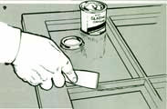

9 Use a clean putty knife and draw it over the glazing compound at a shallow angle to form a bevel between the wood sash and the glass. Pull the knife toward you, making a single stroke from one corner of the frame to the other.(Dipping the blade in linseed oil helps to maintain a smooth surface.)